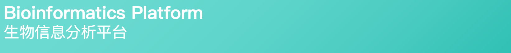

Bioinformatics Platform
生物信息分析平台
Tools
分析工具
FastQC
质量分析
Quality control for sequencing data
测序数据质量评估
FastQC
/
质量分析
Cutadapt
接头修剪
Adapter sequence trimming
去除测序接头序列
Cutadapt
/
接头修剪
STAR Aligner
序列比对
RNA-seq read alignment
RNA-seq序列比对
STAR Aligner
/
序列比对
Guppy
碱基识别
Oxford Nanopore basecalling
纳米孔测序碱基识别
Guppy
/
碱基识别
Minimap2
序列比对
Versatile sequence alignment tool
多功能序列比对工具
Minimap2
/
序列比对
Bismark
甲基化分析
Bisulfite sequencing analysis
亚硫酸氢盐测序分析
Bismark
/
甲基化分析
Design Your Own Workflow
自定义分析流程
Drag tools from above to build your custom workflow (Please drag to the back of the previous Tools) / 从上方拖动工具来构建自定义流程（请拖动到前一个工具的后方）
Next
下一步
Input Workflow Parameters
输入工作流参数
Workflow Parameters
工作流参数
Input Path
输入路径
Output Path
输出路径
Job Name
作业名称
Token
令牌
Run Location
运行位置
Specify the runner group (e.g. pipeline) / 指定运行器组(如 pipeline)
Back
返回
Configure Tools
配置工具参数
Configure Tool Parameters
配置工具参数
Global Parameters:
全局参数:
Job Name:
Token:
Run Location:
Previous Tool
上一个工具
Tool 1 of 3
Next Tool
下一个工具
Back
返回
Run Workflow
运行流程
0%
Confirm Workflow Execution
Are you ready to run the workflow with the configured parameters?
是否准备好使用已配置的参数运行工作流？